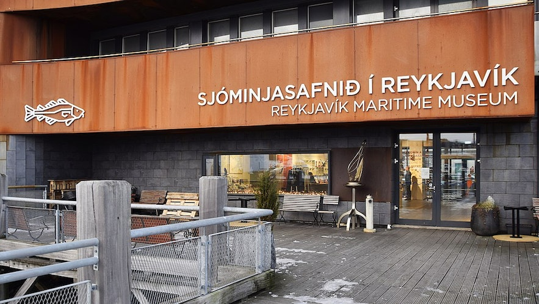
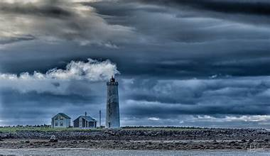
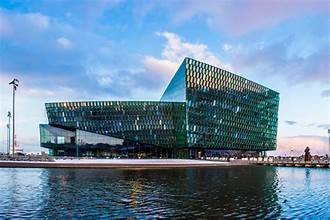
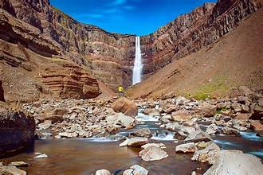
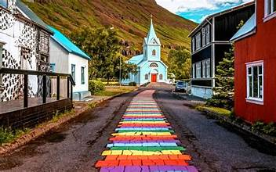
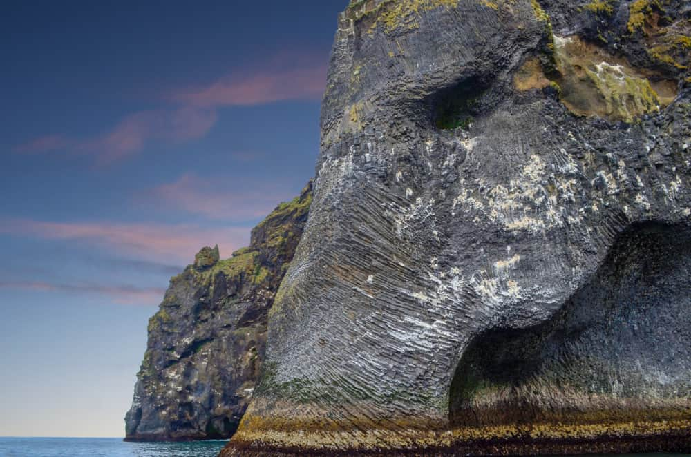
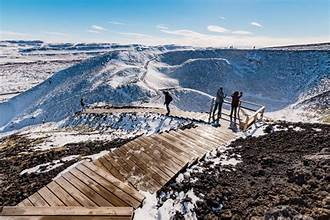
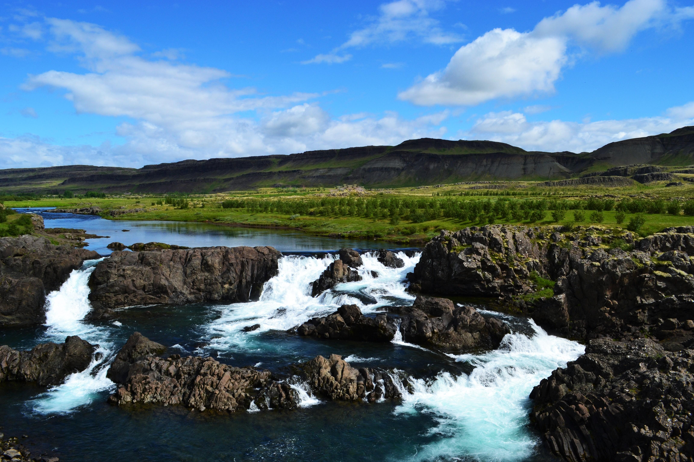
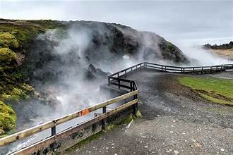

TOP TOURIST SPOT IN ICELAND
REYKJAVIK ICELAND
Reykjavik Maritime Museum
For those interested in the island’s rich history, culture and heritage, the Reykjavik Maritime Museum is an absolute must. Set right next door to Aurora Reykjavik, its two floors are packed with artifacts and artworks, maps, models and more.
Appropriately enough, the museum occupies what was once a fish factory alongside the Old Harbour in the center of town. Its enthralling exhibits look at how early settlers relied on fishing to survive and how it remains an important industry today. Besides covering various methods for catching fish over the centuries, these also examine their impact on Iceland’s culture and traditions.
Particularly riveting are its sections on the ‘Cod Wars’ and the giant Odinn coast guard ship you can explore outside. Coupled with the brilliant Perlan Museum, we thought it provided invaluable insight into Iceland’s identity, history and nature.

Grotta Lighthouse
Jutting out dramatically into the wild waves of the Atlantic Ocean is the gorgeous Grotta Lighthouse. Only accessible at low tide, it is a popular spot to watch sunsets, spot seabirds and see the Northern Lights.
Perched right at the end of the Seltjarnarnes Peninsula, it was erected in 1897 to warn ships about the rugged coast and hidden isles ahead. During high tide, the tombolo connecting it to the mainland is completely covered by the rising waters on either side. As such, make sure to check the tide times carefully before visiting.
While some head here to see its black sand beach and gleaming white tower during the day or as the sun sets, just as many visits during the pitch-black night. This is because the complete darkness of its remote setting makes it a great place to witness the Aurora Borealis.

Harpa
Though it opened only in 2011, Harpa already is considered one of Reykjavik’s greatest landmarks. Harpa is a venue for conferences and concerts, but it’s best known for its eye-catching architecture.
Different colored glass panels surround the building’s steel framework. It was the first building in Reykjavik built expressly to host concerts, with its first concert broadcast on live TV.
Before construction was completed, Harpa was turned into a temporary mosque for the film version of the novel Gæska: Skáldsaga. Events it hosts include International Jazz Day and Reykjavik Children’s Culture Festival.

AUSTURLAND ICELAND
Hengifoss
Layers of red clay between layers of basalt from volcanic eruptions over time. It takes 40-60 minutes to walk from the parking lot to waterfall. On the way is another astonishing waterfall called Litlanesfoss.

Rainbow Street - Seyðisfjörður
The painted street, which in everyday speech is called “The Rainbow Street”, is in the center of Seyðisfjörður. The Blue Church attracts tourist from all over the world that want to experience the rainbow path. The backdrop of mountains is amazing.

The Elephant - Vopnafjörður
One of the characteristics of Vopnafjordur is the incredible rock pillars and cliffs that take on various forms, often resembling different creatures. Ljósastapi rock pillar stands out in the sea just off Skjólfjörur. It is often called “Fíllinn” or The Elephant by locals, as its form resembles that of an elephant.

Western Region Vesturland ICELAND
Hike up Grábrók
Grábrók is a 170 m high crater, mostly covered in moss. It erupted around 3400 years ago. There is a nice walking path up the crater and around it, not to steep or long which makes it a nice break when driving through the area.

Glanni waterfall
In the middle of an old lava field up in Borgarfjörður there’s a sign that says “Glanni”, which leads to a parking lot. This is close to Bifröst University, what seems like a small village 31 km north of Borgarnes. After a few minute hike on a path from the parking lot you get to a beautiful waterfall, surrounded by small, crooked birch trees. If you look closely you might see salmon jumping up the waterfall in summer, as the river is one of the most prestigious salmon rivers in West Iceland.
A few minute walk in the other direction will get you to the peaceful Paradísarlaut (Paradise Hollow).

Deildartunguhver
The most powerful hot spring in Europe is located just by the road. The water of Deildartunguhver hot spring pumps up 180 litres per second of literally boiling hot water. It has been used by locals for centuries to cook their food and clean, and recently to warm up the houses in the area and surrounding towns. Even though the water is harvested so much, you can stop by and see much of it bubbling and streaming out. The only problem is that if you want to take pictures of it, there is quite a lot of steam!

BACK